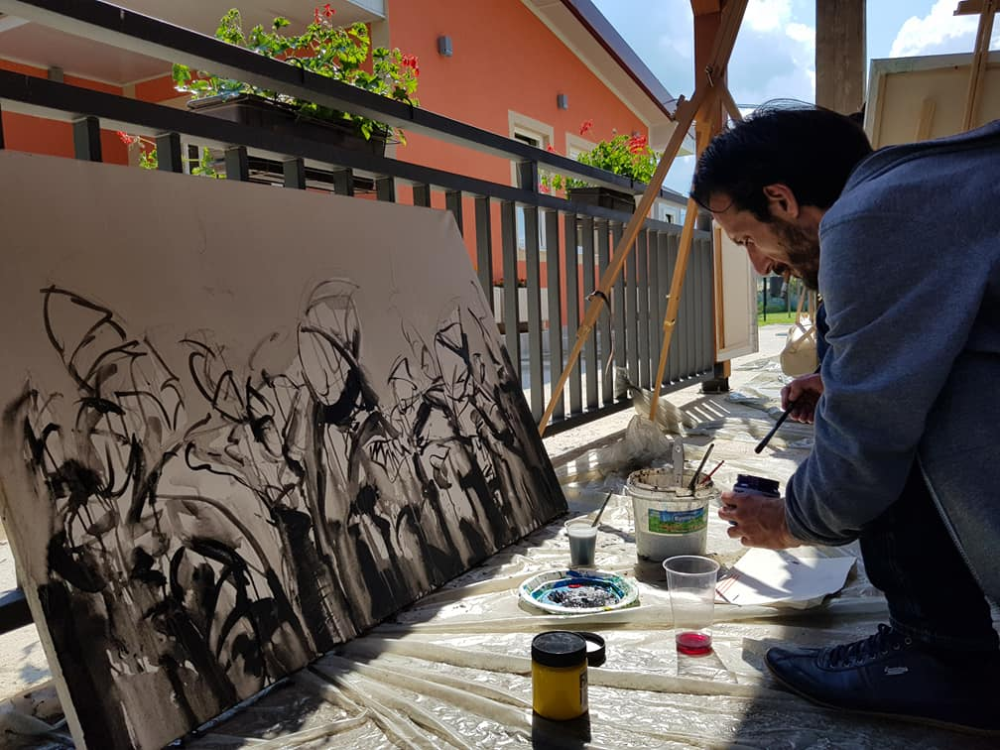
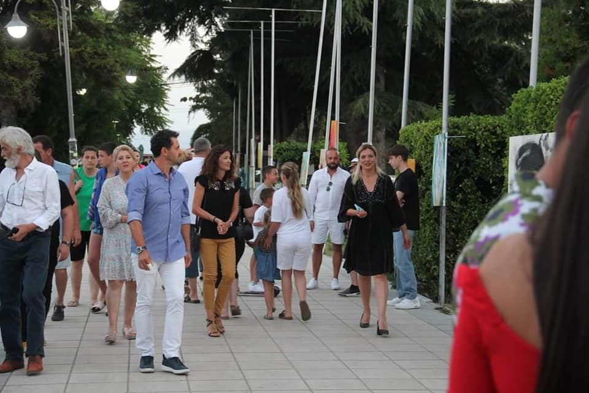
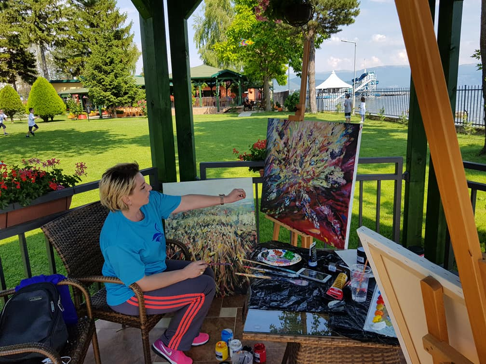
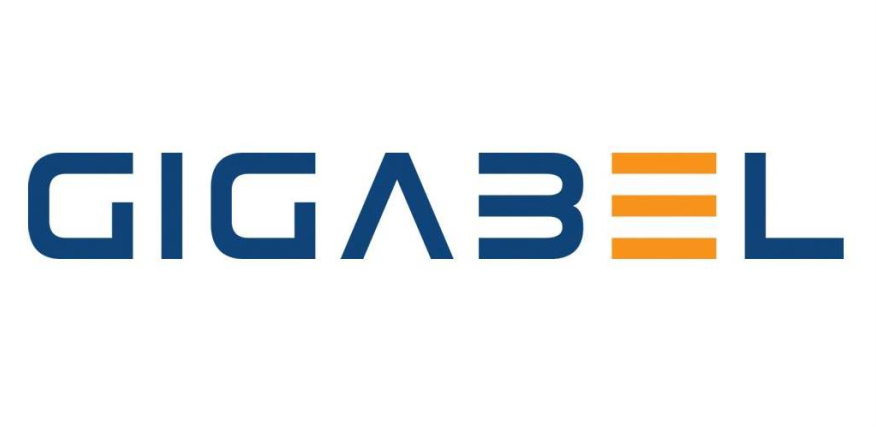
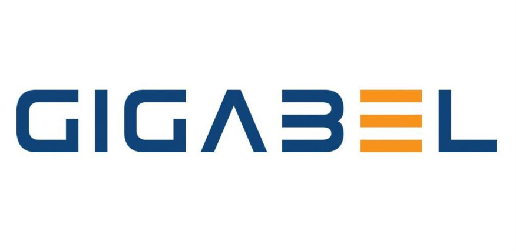

10th International Art Symposium – Struga 2025
Founded in 2016 by Burhan Ahmeti, this symposium gathers artists from across the globe...
Countdown to Opening Day
Meet the Visionary
Burhan Ahmeti – a renowned Albanian artist and professor – established the symposium...
Moments from Previous Editions





 
